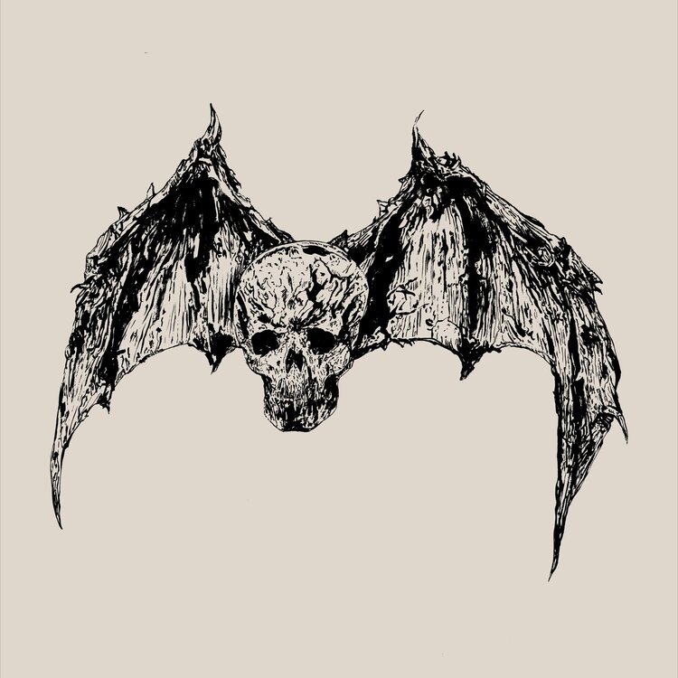
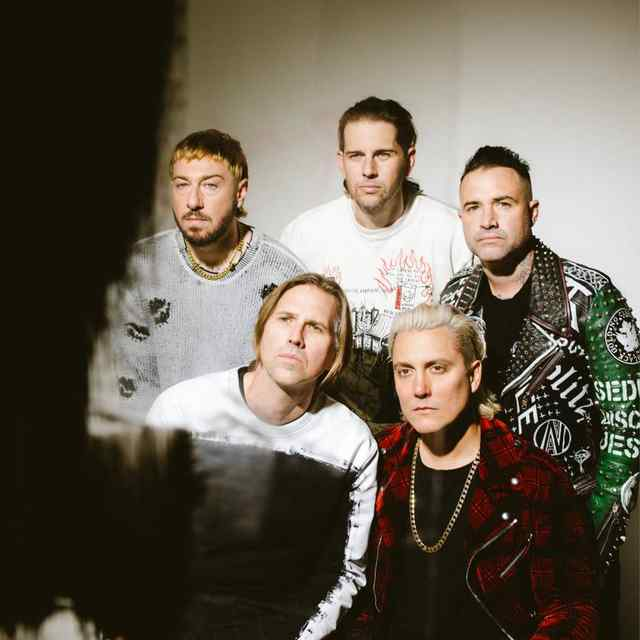

Formed in 1999 in Huntington Beach, California, Avenged Sevenfold (A7X) is one of the most influential modern metal bands. Known for their genre-blending style, they have evolved from metalcore to hard rock and progressive metal.


Avenged Sevenfold has released multiple chart-topping albums including City of Evil, Avenged Sevenfold, Nightmare, and Life Is But A Dream. Their songs like Bat Country, Afterlife, Hail to the King, and Nightmare have become metal anthems.
The band is known for their signature mix of metalcore, hard rock, and progressive elements, blending melodic solos, heavy riffs, and powerful vocals. Their impact on modern metal remains significant.
Featured in Call of Duty: Black Ops II


Synyster Gates (born Brian Haner Jr. on July 7, 1981) grew up in Huntington Beach, California. He was introduced to music at an early age by his father, Brian Haner Sr., a professional guitarist and comedian. Gates developed an early interest in jazz and classical guitar, which later influenced his unique metal style.
In 1999, Gates joined Avenged Sevenfold shortly after its formation. His addition to the band helped shape their melodic yet aggressive sound, blending intricate solos with heavy, rhythmic riffing. Gates played a key role in defining the band's evolution from metalcore to a more refined hard rock and heavy metal style.
Synyster Gates is known for his lightning-fast shredding, sweep picking, and melodic phrasing. His ability to mix classical, jazz, and blues elements into heavy metal has made him one of the most respected guitarists in the world. He frequently incorporates diminished scales, arpeggios, and harmonized leads, often paired with Zacky Vengeance for a twin-guitar attack.
Gates has collaborated with Schecter Guitars to create his Synyster Gates Signature Series. These guitars are known for their sharp, angular designs, Seymour Duncan Invader pickups, and satin finishes. His gear also includes:
Outside of A7X, Synyster Gates has worked on various projects, including guest solos for other artists and music education. He launched the Synyster Gates School, an online platform where he teaches guitar techniques and provides exclusive lessons.
Synyster Gates has been ranked among the greatest metal guitarists of all time by multiple magazines and polls. His playing has influenced a new generation of guitarists, and his contributions to modern metal are undeniable.